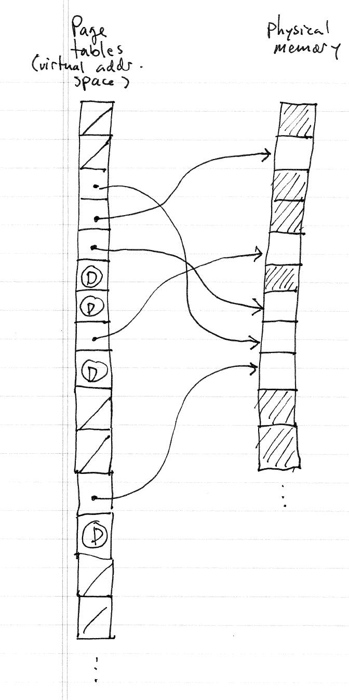
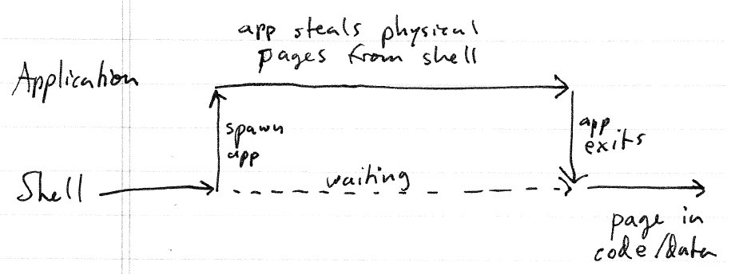
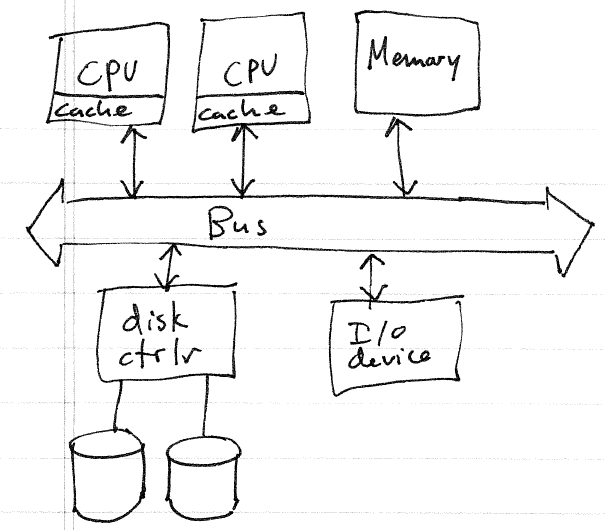

Announce: Assignment 2 posted, due 9/15 by 11:59 PM
Quiz 1 --- 15 minutes
Finish discussing read system call, system call table and dispatch,
and security concerns.
Goal for today: finish discussion of OS concepts and structure.
Each process requires some amount of memory to execute
The amount of memory needed by a process
varies over time
Because in a multiprogrammed system many
processes are running, their total demand for memory may exceed the
amount of physical memory installed in the computer
Term: address space. An address space is the private memory space for a process. An address space creates the illusion that the process is the only process running on the computer. Generally, the address space for a process will be larger than the amount of physical memory. The obviously implies that the address space is sparse, meaning that there are parts of the address space that aren't mapped to physical memory.
Virtual memory is the term for allowing execution of a process to
continue when its demand for memory exceeds available physical
memory. [Question: how is this possible?]
First of all, virtual memory requires hardware support, the
MMU. Typically, MMUs support paging, meaning that the address
space of a process is a map of virtual
addresses to physical pages
of memory. A data structure known as the process's page tables defines this
mapping. The OS kernel maintains the page tables for each process
to determine which physical memory the process will use.

In an OS that supports virtual memory, part of a process's in-memory
data may be moved to secondary storage (disk space). When demand
for physical memory exceeds the amount of available memory, the OS
kernel will select a page of physical memory from a victim process and
steal it. [Question: what must happen when the kernel steals a
page?] Before making the stolen page available, its data is first
copied to disk (the paging file,
sometimes called the swap file).
Question: how to select the page to steal? Many policies for
selecting a page to steal are possible. A common policy is to
select the least recently used page (LRU).
Question: what happens when the process generates a memory reference
which access a page whose data has been moved to disk? A page
fault occurs whenever a memory reference accesses a page that is not
currently mapped to a physical memory frame. The kernel consults
a data structure to determine where the data is stored, allocates a
frame of physical memory (possibly stealing one from another process),
loads the data from disk into the newly allocated frame, and maps it
into the address space (page tables) of the faulting process.
Example scenario: User logs in and starts a command interpreter
(shell). From the shell prompt, the user starts an
application. The shell is now waiting for the application to
finish: therefore, it is suspended (not using the CPU). The
application program runs and eventually requires more memory than is
physically available. A logical way for the OS kernel to acquire
memory needed by the application is to steal it from the shell process
(since the shell is suspended and not using any of the physical memory
it has been allocated). When the application is finished its
memory will be reclaimed, and the shell will be woken up. As the
shell executes again, it may access stolen pages generating page faults.

So far we've talked about single-CPU systems. Increasingly,
computers have multiple CPUs. Questions:
Multiprocessing: general term for a system that uses multiple CPUs
to perform computation.
Basic architecture of a multi-CPU system.

Asymmetric multiprocessing: processors are given specific
tasks. For example, one CPU to handle user computation, another
to handle kernel computation and I/O, etc.
Symmetric multiprocessing (SMP): any processor can perform any
required task. This is more typical for modern OS designs.
Key issue in SMP: multiple processors may be executing kernel code
and accessing kernel data structures at the same time.
Synchronization is needed to make sure that data structures are not
corrupted.
Question: what are some examples of
synchronization mechanisms that the kernel could use?
Other SMP issues: each processor generally has its own cache, which
may or may not be in sync with main memory. Cache coherency is
the problem of making sure that when processors need to share data that
they are seeing a coherent picture of main memory.
On some systems this is handled largely in hardware. However, the synchronization mechansms that the kernel uses generally need to perform special operations to ensure that each processor sees a consistent view of main memory.